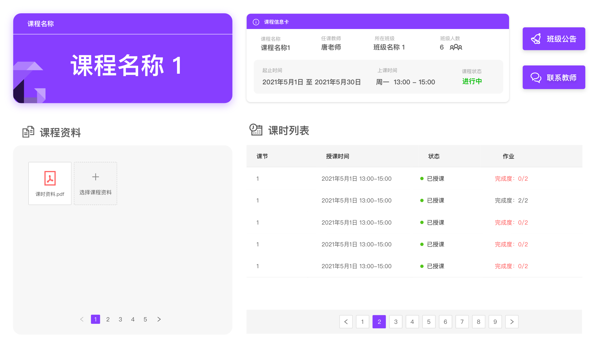

GoOnline Classroom 设计说明
界面改造方案说明

本来这应该是ui的工作，不过朝交互设计方向发展的话也是应该尝试一下这种类型的工作，交互设计说到底也离不开具体的ui表现，因此接下了此次伴随着GoOnline Classroom部分前端和后端的大改造一起进行的界面改造工作。
页面主体结构设计
这是改造前的界面结构设计，大致可以分为三个部分：
- 顶栏，含项目logo，以及右边的主功能按钮和含账户相关功能的下拉菜单栏
- 底栏，含网页备案号，以及反馈渠道
- 中间内容区，面包屑，子页签，子页签内容区
其中，对于顶栏和底栏，采用了大块的主题色作为背景，作为主要用电脑端浏览器使用的应用，这样的顶栏和底栏牺牲了本就吃紧的纵向空间，加上面包屑，与页签的排布，导致最后页面可利用的真正的内容区只剩下这一小块

扁宽的空间与竖直的空间相比更不利于阅读（这也是为什么除了一些绘本之外的文字多的书籍，都不选择扁宽的书形），在自己的实践中也发现扁宽的空间排布内容通常需要分多列排布才能平衡界面的内容密度，因此需要为此做出改变，初步设计将页面的一级页签，与面包屑设置在顶部一起排布，且取消了使用大色块占位的设计。
原先的顶栏和底栏的大色块会分散用户对于内容页面的注意力，改造后优化了不少，但是我还想更进一步地去淡化用户无需特意去关注的logo，面包屑，以及底栏（这些内容，很少甚至不会加入到用户达成自己目标所计划进行的操作中），因此设计将原先的上中下三层的平面结构（顶栏，中部内容，底栏）改造成立体的上中下三个层级，这些层级关系通过它们动态的遮挡，以及material design中经典的阴影去体现：
- 悬浮层，始终前置于界面内容，无法被其他内容遮挡，用于放置层级或优先级较高的页签，操作或者信息提示
- 内容层，可滚动，用来展示页面主体内容
- 背景层，放置次级导航，网站logo，备案号面包屑等。
对于页面不可滚动的场景，如一些管理页面，内容层不会遮挡背景层中的logo，面包屑，备案号等，对于一些页面需要滚动的内容浏览页面，如查看作业描述页，内容层的滚动会将面包屑，备案号这类次要信息遮挡，从而变相让出页面的纵向空间，更好地进行内容的浏览，若背景层中有次级导航，内容层的滚动又不会遮挡次级导航。

色调风格/字体选择
轻快简明，是我觉得此类应用最需要贯彻的风格，因此我选择了灰白的主基调，辅以品牌色作为点缀，而goonline的logo颜色中的各种紫色，色调都偏黑灰或偏浅白，因此需要调出一种更加鲜亮的颜色 [#873EFF]作为强调色。
[#873EFF]作为强调色。

题外话，学姐设计的logo中每一个色块的形状都对应着七巧板中的一块，而七巧板是一个很好的教育相关的意象
同时，使用灰白色作为主色调，需要避免出现纯黑以及非灰白的版面背景色，大部分字体使用65%透明度的黑色，少部分背景为非白色的字体则使用白色，字体主次更多地去使用字重的轻重来体现。
同样的，为了体现轻快简明的界面，字体则可以采纳ant-design中的建议，兼顾了简洁与兼容性，以及不去使用大面积使用的话会看起来杂乱的衬线字体。
1 | |
遵守的一些页面交互原则
逻辑上为一类的内容尽量放在同一个页面。由于不是移动端应用，因此我们有条件去通过合理安排内容到同一个页面去减少页面的跳转以及用户操作的效率。例如，班级信息，某个班级的课时列表，以班级为基本发布单位的公告，都需要安排在一个页面，在逻辑上让用户意识到这些内容都属于“一个班级”内的范畴。也因为此，一些新建以及修改内容的表单我更倾向于做成模态框的形式，从而减少体验割裂的跳转
发布公告的模态框 新建的优先级大于编辑。对于此类班级/课程管理的应用，新建班级/课程/公告的频次和重要性一般都会大于修改它们，因此对于新建某样东西的功能按钮，一般会使用强调色去强调，或者适当提高它们的层级。

提高层级+强调色强调的按钮 对于信息密度较高的页面，需要合理使用灰色块/卡片/分割线去分割纵向的内容，内容的横向分割使用空白间隔即可。
用作管理的页面为了使用效率，尽量避免内容上的滚动；对于浏览信息性质的页面（如学生查看作业描述等），为了避免阅读的割裂感，内容过长时需要页面中的内容能够滚动。
所有内容都要有他的归宿。要避免看起来游离的，不知道它属于哪一个内容块的内容排布，作为用户，看到这类内容会非常困惑。
反例  正例 …
使用的通用组件
项目中大部分的通用组件，如表单，按钮，部分页签，下拉框，模态框等都是使用或者基于antd提供的组件去完成，但是设计界面结构的内容，如背景层的次级导航，底栏，顶栏悬浮按钮等都是非antd组件。antd总归是作为企业中台的设计，我认为可以使用它去完成快速开发，但是最终还是需要根据面向人群以及产品功能去做出取舍和改进。
设计规范的制定
设计规范使用mockplus提供的《示例规范库》摸板编写，放在了团队的mockplus文档中。
本博客所有文章除特别声明外，均采用 CC BY-SA 4.0 协议 ，转载请注明出处！